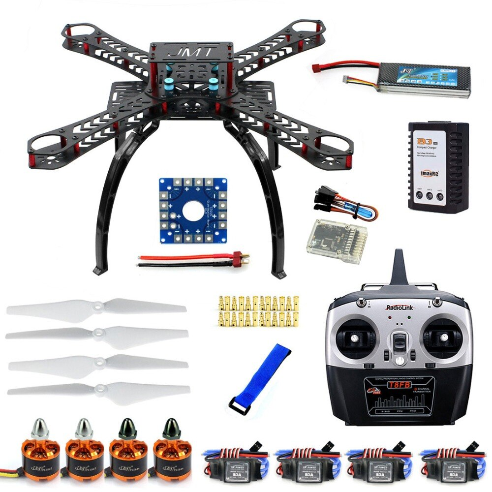
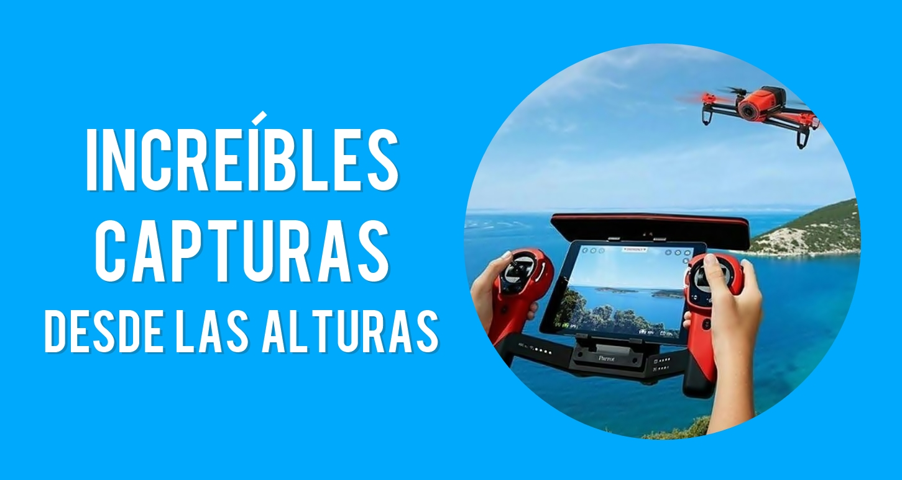
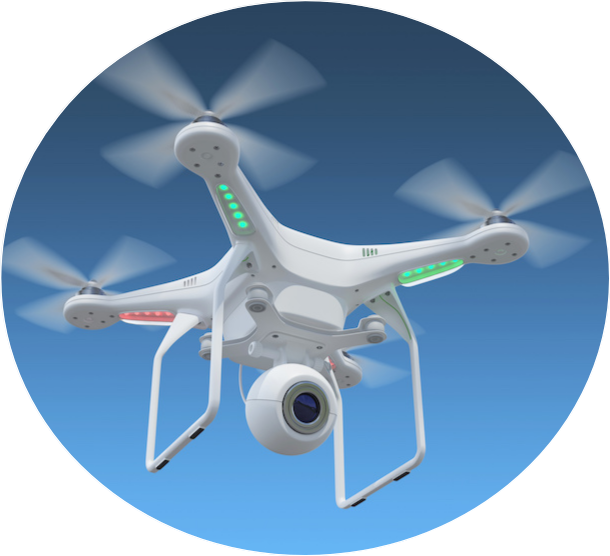

-

Accesorios
Contamos con un excelente inventario de Accesorios para drones como kit de cargadores, bolsas, baterias entre otros.
-

Drones para entretenimiento
Contamos con una granvariedad de drones de diferentes estilos y modelos, precios y funciones. excelentes para el uso desde un niño como hasta adultos, fotografos o personas que solo quieran experimentar nuevas aventuras con estos novedosos aparatos.
-

Drones profesionales
Brindamos soluciones de ultima generación que nos asegura la maxima creación de valor a nuestros clientes en toda la republica de Guatemala y Cetroamerica, a las industrias de tipo agricola, cinematografia, construcción, energia y otros.
-
Soporte tecnico
Agregamos valor a nuestro servicio y por ello te brindamos esoseria tecnica en el uso de los equipos, como tambien mantenimiento y reparación de los equipos y actualizacion de sofware.